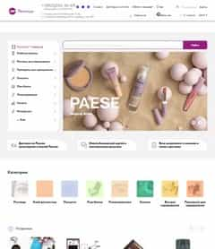

Образование
ВУЗ: Технический Университет Молдовы
Специализация: Компьютеры
Навыки
CSS - Cascading Style Sheets
Каскадные таблицы стилей - довольно сложный и запутанный язык описания внешнего вида сайта. Работает в тесной связке с языком разметки гипертекста HTML. В настоящее время интенсивно развивается и обновляется.
Оцениваю знания этого языка в 70% ±
Иногда пользуюсь справочниками
HTML - HyperText Markup Language
Язык разметки гипертекста - предназначен для создания Web-страниц
Оцениваю знания этого языка в 85% ±
Есть теги которые никогда не использовал
JS - JavaScript
Скриптовый язык программирования высокого уровня. Взаимодействует с веб-страницами и запускается на стороне клиента при наступлении определенных событий.
Могу - подключить, измененить, написать небольшой скрипт
В процессе изучения.
SASS - Syntactically Awesome Style Sheets
SASS - это препроцессорная технология, которая упрощает написание CSS-кода и позволяет динамически им манипулировать. В основном использую его для сборки файлов и переменные.
Оцениваю знания этого языка в 50% ±
Во всех проектах использую SASS (.scss)
PUG (он же Jade) - это препроцессор HTML
PUG - это препроцессорная технология, которая в разы упрощает написание HTML-нативного-кода и позволяет динамически им манипулировать.
Оцениваю знания этого языка в 45% ±
Во всех проектах использую PUG (.pug)
GitHub - система контроля версий
GitHub — крупнейший веб-сервис и хостинг для хранения, распространения и совместной разработки web-проектов по всему миру. Имеет большие возможности и разные плюшки.
Работаю не давно, со времени создания этого портфолио
GULP - таск-менеджер
Gulp — используется для автоматического выполнения часто повторяющихся задач. Отличный сборщик проектов, но при неумелом пользовании, сильно загружает систему.
Во всех проектах использую Gulp
Адаптивность - Adaptive Web Design
Адаптив - обеспечивает правильное отображение сайта на различных устройствах с разными размерами окна браузера. В основном @media-запросы использую в css, в JS - крайне редко. Новые функции типа: dark mode (ночной режим), prefers-contrast и т.д. - никогда не использовал. Зато убираю анимации и переходы на мобильных устройствах с помощью @media-запроса prefers-reduced-motion.
Куда же без нее, использую по default
Кроссбраузерность
Самый проблемный и упрямый (не зря его называли "ишачком") был браузер Internet Explorer. Но, уже пару лет Компания Microsoft активно продвигает свой новый браузер Edge на базе Chromium - и "дышать" стало на много легче. В моих проектах, за кроссбраузерностью следит Gulp со своим плагином "autoprefixer" и некоторые полифилы, которые устанавливаю принудительно. К тому же, использую файл "reset", за которым постоянно слежу, меняю и обновляю довольно часто. Как обычно, серьезных проблем с кроссбраузерностью - не имел.
Gulp с плагином "autoprefixer", полифилы и свой файл "reset"
БЭМ — именование CSS классов
Расшифровывается как: Блок (корневой элемент компонента) Элемент (составная часть Блока) Модификатор (вариант или расширения Блока). Придуман в Яндексе, чтобы решить проблему именования CSS классов в проектах. Оказалось, что дальнейшая обработка или изменение верстки, на много легче, если название классов упорядоченны и в большинстве случаев, говорят сами за себя. Только использую т.н. европейский вариант - 2 дефиса для разделения имён блока и элементов от модификатора. Почему? Потому что, если Блок, Элемент или Модификатор состоит из 2-х слов (что бывает довольно часто), то их разделяю одним дефисом. И все в порядке, все ОК. И визуально смотрится намного лучше
БЭМ неминг — block-bl__element-el--modifier-mod
Инструменты и сервисы
Верстка макета из Figma
Технологии: HTML5, CSS3 - Flex & Grid
Препроцессоры
Pug (Jade), SASS (.scss)
Сборщик проектов
Gulp
Проверка верстки
Pagespeed & validator.w3
Проверка верстки по макету
Расширение: Pixel Perfect Pro
Оптимизация изображений
squoosh - от Google (.webp) & tinypng (.png .jpg)
Иконочные шрифты
icomoon
Редакторы кода
Sublime & VSCode от Microsoft
Browser
Firefox Developer Edition
Хостинг
GitHub Page
График работы
1. Работа в офисе
2. Работа удаленно или частично удаленно
В связи с распространения короновируса, и создавшейся ситуацией в городе, желательно, если не сразу, то через какое-то время - перейти на удаленный график работы с приходом в офис по необходимости
Тем более, что в домашних условиях (я не говорю за других, я говорю только за себя), работа на много эффективнее и производительнее, т.к. график работы ненормирован, никто не отвлекает и не напрягает, работаешь в свободной обстановке, как удобно, а не по дресс-коду
И самое главное, не теряется ежедневно, драгоценное время, как минимум два-три часа, на дорогу в офис и обратно. Особенно, утром - т.к. максимум в 7:00 - я уже работаю
Рабочее место - оборудованно и настроенно для верстки
Связь - телефон, интернет, видео
Выполненные работы
Все макеты Фигма, из открытых источников, сверстаны мною
Коды - комментировать не буду, они скажут все, сами за себя
Классы - по БЭМу (комменты, тоже будут лишними)
- ALL
- Сайты
- Лендинги
- Магазины

Landing Page
Посадочная (целевая) страница по рекламе и продаже мороженного. Виртуальный лендинг, макет с сайта figma.community.
🐟
Сайт
В разработке

Интернет магазин
Интернет магазин "Ресницы". Реальный сайт по продаже накладных ресниц, инструментов и аксессуаров. Сверстано только индексная страница.
🐟
Магазин
В разработке
🐟
Landing Page
В разработке
🐟
Сайт
В разработке